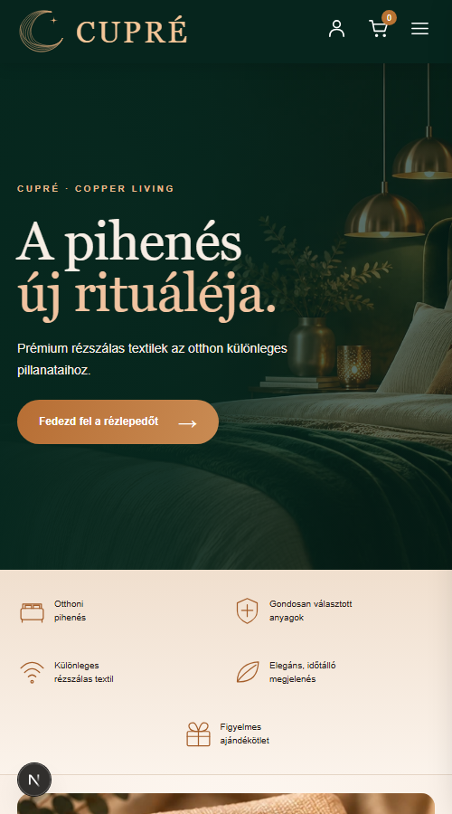

Egy webshop, amely a márkát szolgálja
A CUPRÉ webshop nem sablonból készült: a jóváhagyott látványtervet pixelpontosan valósítja meg, és köré épít mindent, ami egy prémium termék online értékesítéséhez kell – a termékoldaltól a fizetésen és szállításon át a rendeléskezelésig.
Amit a vásárló lát
Márkahű dizájn
Mélyzöld és réz színvilág, elegáns tipográfia, hangulatos képek. A felület mobilon, tableten és asztali gépen is igényes.
Három nyelv
Magyar, angol és német felület egy kattintással váltható nyelvválasztóval; a keresők számára is helyesen jelölve.
Termékoldalak változatokkal
Méret és minőségi osztály (I. / II. osztály) szerint egyetlen listából választható változatok, saját árral és cikkszámmal; másodosztályú változatnál kis betűs tájékoztatás az optikai eltérésekről; részletes termékinformációk. A „Termékek” menüpont csak egynél több termék esetén látszik.
Kényelmes fizetés
Bankkártya a Barion biztonságos fizetőoldalán, banki átutalás vagy utánvét – mindegyik külön be- és kikapcsolható.
Rugalmas szállítás
Házhozszállítás futárral, Foxpost csomagautomata térképes automataválasztóval, vagy MPL PostaPont.
Kuponok, akciók
Fix összegű kuponok érvényességi idővel, amelyeket a vásárló a pénztárban vált be.
Vásárlói fiók
Regisztráció vásárlás nélkül is: mentett szállítási adatok, korábbi rendelések állapottal, jelszócsere, fióktörlés.
Hírlevél
Feliratkozás dupla megerősítéssel – vásárlás és regisztráció nélkül is, leiratkozás egy kattintással.
Átlátható tájékoztatás
ÁSZF, adatkezelési és elállási tájékoztató, impresszum mindhárom nyelven; kötelező termékadatok a termékoldalon.


A vásárlás útja
A rendelés néhány lépés, és minden lépésnél egyértelmű, mi történik.
| Lépés | Mi történik |
|---|---|
| 1. Termékválasztás | A vásárló változatot (méret + osztály) választ, a kosár a böngészőben megmarad oldalváltáskor és újratöltéskor is. |
| 2. Pénztár | Szállítási adatok (belépett vásárlónál előtöltve), szállítási és fizetési mód, kuponkód, az ÁSZF elfogadása. Az összesítő azonnal mutatja a díjakat és a kedvezményt. |
| 3. Fizetés | Kártyánál átirányítás a Barion fizetőoldalára; átutalásnál a számlaszám és a közlemény azonnal megjelenik; utánvétnél a fizetendő összeg. |
| 4. Visszaigazolás | Visszaigazoló oldal és e-mail a vásárló nyelvén; sikeres kártyás fizetésnél „fizetés beérkezett” levél. |
| 5. Feladás | Amikor a bolt feladja a csomagot, a vásárló értesítést kap, akár csomagkövetési számmal. |
Amit a bolt üzemeltetője kap
Rendeléskezelés
- Lista állapot szerinti szűrőgombokkal és kereséssel
- Rendezhető, méretezhető oszlopok, lapozás állítható lapmérettel
- Rendelés részletei felugró ablakban: vásárló, tételek, szállítás, fizetés, kupon
- Állapotváltás naplózással, feladáskor automatikus értesítő
- Átutalás / utánvét beérkezésének rögzítése
- CSV és Excel export könyveléshez, futárnak
Kuponok és hírlevél
- Kuponok létrehozása, ki-bekapcsolása, felhasználási statisztika
- Hírlevél-feliratkozók állapot szerint, törlés
- CSV és Excel export a hírlevélküldő szolgáltatónak (csak megerősített címek)
Egyszerű tartalomkezelés
- Termékek, árak, változatok, GYIK áttekinthető adatfájlokban, három nyelven
- Cégadatok egy helyen – a jogi oldalak automatikusan frissülnek
- Fizetési és szállítási módok, díjak egy kapcsolóval
Biztonságos működés
- Külön fejlesztői, teszt és éles környezet, saját adatokkal
- Az árakat és díjakat mindig a szerver számolja
- A kártyaadat sosem érinti a webshopot
- Jelszavak titkosítva, próbálkozás-korlátozás, ellenőrző kérdés az admin belépésnél
Admin felület bárhonnan
- Háromnyelvű kezelőfelület: magyar, angol, német
- Bal oldali hamburgermenü, telefonon is teljes értékű használat
- Legfeljebb öt saját admin felhasználó
- Felhasználónként mentett nyelv, lapméret és téma – minden eszközön ugyanaz
Megfelelés és biztonság
Jogszabályi alapok beépítve
A rendszer a magyar és uniós webáruház-szabályozás elvárásait szem előtt tartva készült: impresszum, ÁSZF, elállási tájékoztató és nyilatkozatminta, adatkezelési tájékoztató, „Megrendelés fizetési kötelezettséggel” gomb éles módban, az ÁSZF elfogadásának rögzítése, bruttó árak, kötelező textil- és termékbiztonsági adatok, dupla megerősítésű hírlevél, a vásárló fiókjának önálló törlése.
Fontos: a jogi szövegek vázlatok – élesítés előtt jogásznak kell véglegesítenie őket.
| Terület | Megoldás |
|---|---|
| Kártyás fizetés | Barion Smart Gateway – a kártyaadatot a vásárló a Barion oldalán adja meg; a fizetés állapotát a rendszer mindig közvetlenül a Bariontól kérdezi le. |
| Fiókok | Sózott, visszafejthetetlen jelszó-tárolás; biztonságos munkamenet-sütik; jelszócsere után minden eszközről kijelentkeztet. |
| Visszaélések ellen | Próbálkozás-korlát a belépésre, regisztrációra, kuponkódokra és fizetés-indításra; az admin belépésnél egyszer használható ellenőrző kérdés. |
| Admin hozzáférés | Legfeljebb öt névvel azonosított admin felhasználó, 8 órás munkamenet; a beállítások felhasználónként a szerveren tárolódnak. |
| Adatvédelem | Személyes adat csak az elkülönített adatbázisban; a böngészőben csak a kosár tartalma tárolódik; analitika nincs beépítve. |
| Üzembiztonság | Fejlesztői, teszt és éles környezet külön adatokkal; a módosítások előbb tesztkörnyezetben próbálhatók ki. |
Technológia
Korszerű, széles körben használt alapokon – gyors oldalbetöltés, jó keresőoptimalizálás, könnyű továbbfejleszthetőség.
| Elem | Választás |
|---|---|
| Keretrendszer | Next.js 16 (App Router), React 19, TypeScript; az admin felület HeroUI v3 és Tailwind CSS alapon |
| Megjelenítés | Előre generált, gyorsan betöltődő oldalak; optimalizált képek; reszponzív dizájn |
| Adatok | Termékek, GYIK, cégadatok, szövegek: JSON fájlok; vásárlók, rendelések, kuponok: SQLite adatbázis |
| Fizetés | Barion (bankkártya), banki átutalás, utánvét |
| Szállítás | Futárszolgálat, Foxpost automataválasztó, MPL PostaPont |
| Üzemeltetés | Saját VPS-en futtatható, külső függőségek nélkül |
Az élesítésig
A rendszer funkcionálisan kész. Az éles indulás előtt az alábbiak szükségesek:
Tartalom és szerződések
- Végleges termékadatok, árak, valódi termékfotók
- Cégadatok, bankszámla, szállítási díjak
- Barion, futár, Foxpost és MPL szerződés
- Jogi szövegek jogászi véglegesítése
Technikai lépések
- Valódi e-mail-küldés bekötése
- Számlázó rendszer (pl. Számlázz.hu, Billingo) bekötése
- Telepítés a VPS-re HTTPS-sel, adatmentéssel
- Barion teszt a sandbox környezetben